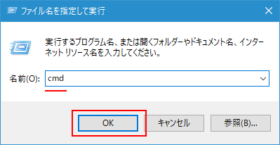
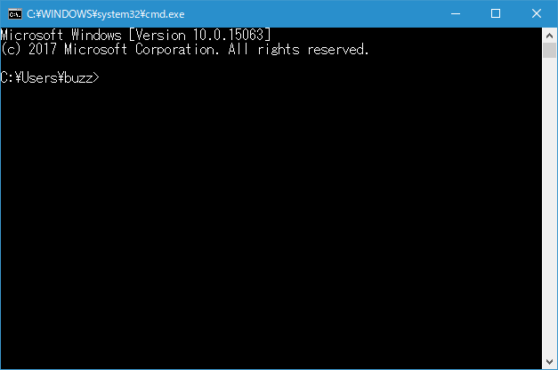
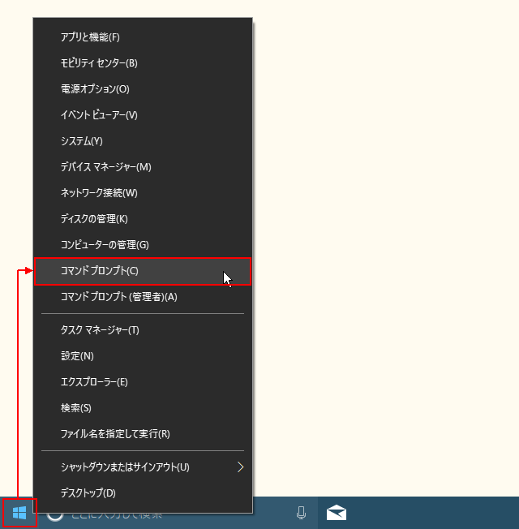

コマンドプロンプトを起動する
Windows10 の環境でコマンドプロンプトを起動する方法について解説します。
目次
アプリ一覧の中からコマンドプロンプトを起動する
1つめの方法はアプリ一覧の中からコマンドプロンプトを起動する方法です。デスクトップ左下にあるスタートボタンをクリックし、表示されたアプリ一覧の中の「Windows システムツール」をクリックして下さい。さらに「コマンドプロンプト」をクリックして下さい。
コマンドプロンプトが起動します。

「ファイル名を指定して実行する」を利用する
2つめの方法は実行するファイル名を指定して実行する方法です。デスクトップ左下にあるスタートボタンをクリックし、表示されたアプリ一覧の中の「Windows システムツール」をクリックして下さい。さらに「ファイル名を指定して実行」をクリックして下さい。
「ファイル名を指定して実行」ダイアログが表示されます。
コマンドプロンプトの実行ファイル名は「cmd.exe」です。検索ボックスに「cmd」と入力して「ok」をクリックして下さい。

コマンドプロンプトが起動します。

-- --
なお「ファイル名を指定して実行」ダイアログを表示するためのショートカットキーが用意されています。[Windowsキー]＋[R]キーを押してください。
「ファイル名を指定して実行」ダイアログが表示されます。
検索ボックスを利用する
Windows10のタスクバー上に検索ボックスを表示している場合は、検索ボックスからもコマンドプロンプトを起動することができます。
検索ボックスに「cmd」と入力すると検索結果が表示されますので、その中から「コマンドプロンプト」をクリックして下さい。
コマンドプロンプトが起動します。
-- --
なお検索ボックスを表示していない場合は[Windowsキー]＋[S]キーを押して下さい。
Cortanaが起動します。(CortanaとはWindowsで利用できるパーソナルアシスタント機能です)。
そのまま「cmd」と入力すると検索結果が表示されます。その後の手順は同じです。
スタートボタンを右クリックして表示されるメニューから起動する
スタートボタンをを右クリックして表示されるメニューからコマンドプロンプトを起動する方法です。デスクトップ左下にあるスタートボタンをクリックし、表示されたメニューの中から「コマンドプロンプト」メニューをクリックして下さい。

コマンドプロンプトが起動します。

-- --
なお同じメニューを表示するためのショートカットキーが用意されています。[Windowsキー]＋[X]キーを押してください。
メニューが表示されます。
-- --
Windows10の設定によってはメニューの中に「コマンドプロンプト」ではなく「Windows PowerShell」が表示される場合があります。「コマンドプロンプト」を表示したい場合には「コマンドプロンプトとWindows PowerShellのどちらをメニューに表示するのかを設定する」を参考に設定を変更して下さい。
エクスプローラーから任意のフォルダでコマンドプロンプトを起動する
これまでの起動方法ではコマンドプロンプトを起動すると、「C:\Users\ユーザー名」のフォルダから開始されます。

エクスプローラーを使ってコマンドプロンプトを起動することで、任意のフォルダから開始することができます。最初にエクスプローラーを起動し、任意のフォルダを表示して下さい。今回は「C:\Windowws\temp」を表示しました。
現在のフォルダの位置を表示している個所をクリックして下さい。
フォルダの位置が選択された状態になりますので、ここに「cmd」と入力してから「Enter」キーをクリックして下さい。
コマンドプロンプトが起動します。この時、最初に表示されるフォルダは先ほどエクスプローラーで表示していたフォルダから開始されています。
-- --
コマンドプロンプトを起動する色々な方法について解説しました。
( Written by Tatsuo Ikura )

著者 / TATSUO IKURA
初心者～中級者の方を対象としたプログラミング方法や開発環境の構築の解説を行うサイトの運営を行っています。